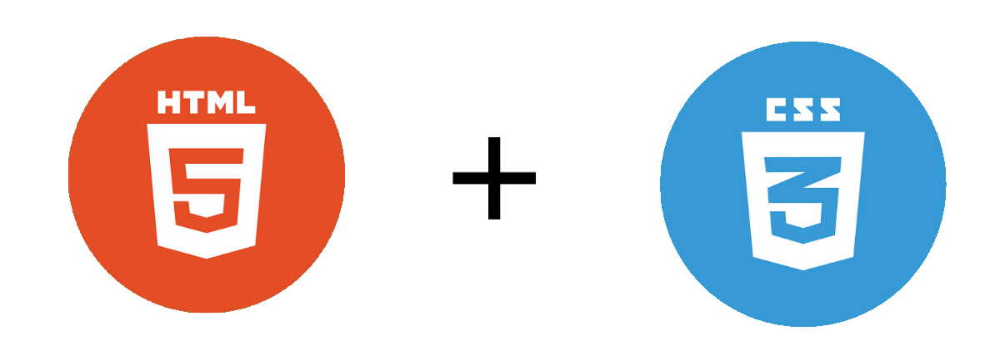

Background in Python, MATLAB, and C Programming
With some of my programming history dating back to lower secondary, python taught me the fundamentals of the world of programming. To me it holds comfort as an easy and reliable scripting language.
C programming on the other hand, was my introduction into the mechatronics environment. The first leap into complex projects solving real world problems, C helped me build a more whole understanding of programming design.
Naturally, through my universities' program, I've familiarised myself with MATLAB, as a tool for solving difficult equations.
History in Game Development
My introduction into the world of game development started with using Love2D, a framework perfect for small 2D game projects, as it focuses on the pure programming as opposed to engines.
Using Love2D and recently pygame, I've entered a few game development competitions, recently winning my first with a parody visual novel developed in 48 hours with a small group of friends.
Now, I'm looking to expand into Unity, to make the development process more streamline.
Essential Skills in Microsoft Office and LaTeX

Naturally,as an essential tech skill in many fields, I have had plenty of experience in the Microsoft Office collection.
As for LaTeX, I found this tool through a short extra-curricular introductory course, and since then have written the majority of my reports within the clean and rewarding markup language.
Web Development through HTML/CSS

My years in highschool ICT class put focus on web development, and I even ended participating in my first ever web development competition in the 2018 Grok Learning Web Comp.
Nowadays I rarely work on web development projects, however come back to use some of these skills in moments such as creating this page.